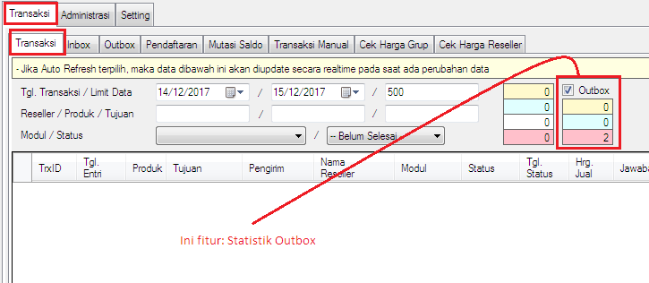

Statistik Outbox
Statistik Outbox merupakan fitur baru yang mulai tersedia di versi 3.7.8, berguna untuk mengurangi
pemprosesan data sehingga dapat mempercepat kinerja OtomaX, berada di menu Transaksi ->
Transaksi, perhatikan gambar di bawah ini:

Secara default Statistik Outbox akan tercentang saat OtomaX dijalankan. Jika dicentang, maka akan menampilkan jumlah pesan yang dikirimkan di Outbox berstatus belum diproses, sedang diproses dan gagal, memudahkan mengontrol status pengiriman pesan di Outbox, tidak perlu berpindah ke menu Transaksi -> Outbox; jika tidak dicentang, maka tidak menampilkan jumlah pesan di Outbox, namun dapat membantu meningkatkan performa OtomaX sebab berkurangnya proses pengolahan data.
Selanjutnya apabila Anda memiliki pertanyaan seputar fitur di atas silahkan klik disini.